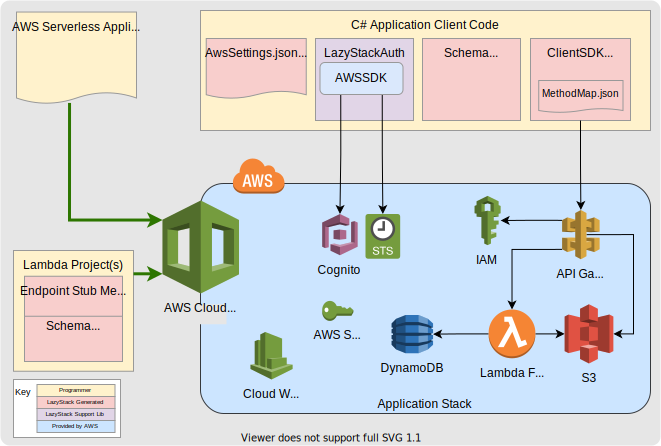

Here is a simple AWS Serverless stack using .NETCore
The benefit of a serverless stack is that there is very little traditional “DevOps” required to create and update these stacks. In addition, the serverless stack components auto-scale from zero resource-usage to large resource-usage automatically so your application can grow without pain. The best part is the cost of your application stack, in “idle state”, is near-zero. You only pay for what you use and since all these services (except Secrets Manager) are part of the AWS free-tier, a substantial amount of application stack usage is free.
Even though there is much less “DevOps” required to use Serverless Stacks on AWS, you still need to configure all the AWS resources used in your Stack. AWS makes this easier with their Serverless Application Model (SAM) language.
This is all pretty simple if you are building a “demoware” application stack with a simple REST API and no security. Things get a lot more complex as you move from “demoware” to a “full” application stack with a robust REST API, multiple lambda functions, full security and substantial application development support.
LazyStack bridges the gap between the “demoware” and a “full” application stacks by automating much of the work involved and providing reasonable default implementations for secure AWS resource definitions in your application stack and providing application development support features like local debugging and extensible code frameworks for server and client-side libraries.